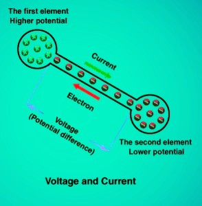
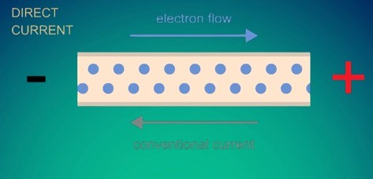

Electricity is not a "thing" you can hold, but rather a phenomenon resulting from the existence and movement of electric charge. At its core, electricity is the energy provided by the displacement of electrons. While we often think of it as something that comes from a wall socket, it is a fundamental force of nature that powers everything from your nervous system to the stars.
1. What is Electricity?
In the previous sections, we looked at Static Electricity—charges sitting still on a surface. General Electricity (or Current Electricity) refers to the continuous flow of these charges through a medium.
Think of it like water:
- Static is a still pond.
- Current is a flowing river.
The "water" in this analogy is the electron. In conductive materials, electrons are not tied to a single atom; they are "free" to hop from one atom to the next. When a billion billion electrons move in the same direction, we have an electric current.
Historical Note: Even though we now know electrons are responsible for electricity, it was thought that positive charge traveled through a conductor when it was first discovered. Hence we say the current (conventional current) flows from positive to negative while electron flow is from negative to positive.

Comparison of Conventional Current (Positive to Negative) vs Electron Flow (Negative to Positive)
2. The Driving Force: Potential Difference (Voltage)
Electrons don't just move for fun; they need a reason to travel. This reason is Potential Difference, commonly known as Voltage.
In physics, everything seeks a lower energy state. If you have a massive pile of negative electrons at one point (High Potential) and a deficit of electrons at another point (Low Potential), the universe wants to balance them out.
The "push" created by this imbalance is the electrical potential. Without this "pressure" or "push," the electrons would simply jitter in place. The greater the difference in charge between two points, the higher the voltage, and the more "energy" the electricity carries.

Visualizing Voltage as the 'Pressure' that drives charges through a circuit
3. The Path of Least Resistance: Conductors vs. Insulators
For electricity to exist as a flow, it needs a medium that allows movement.
- Conductors: Materials (usually metals) where the outermost electrons are loosely bound. These "free electrons" act like a highway, allowing charge to zip through with almost no effort.
- Insulators: Materials where electrons are gripped tightly by their parent atoms. In these materials, the "energy cost" to move an electron is so high that the flow is effectively blocked.
Electricity will always follow the path of least resistance. If it has a choice between a difficult path and an easy path, the vast majority of the charge will surge through the easy one.
4. Generation: Converting Energy
Electricity is a secondary energy source, meaning we don't "find" it; we convert it from other forms of energy. Most electricity is generated by exploiting the relationship between magnetism and electrons.
When a magnet moves near a wire, it physically "pushes" the electrons inside that wire. This is called Electromagnetic Induction. Whether the power comes from a wind turbine, a coal plant, or a hydroelectric dam, the goal is the same: use a physical force to spin a magnet, which in turn forces electrons to start moving.
Summary of Essentials
- Electricity is the flow of electrons.
- Current is the rate at which they flow.
- Voltage is the "pressure" making them move.
- Conductors allow the flow; Insulators stop it.
Finished studying this topic?
Mark it as completed to unlock the next level in your Physics journey!